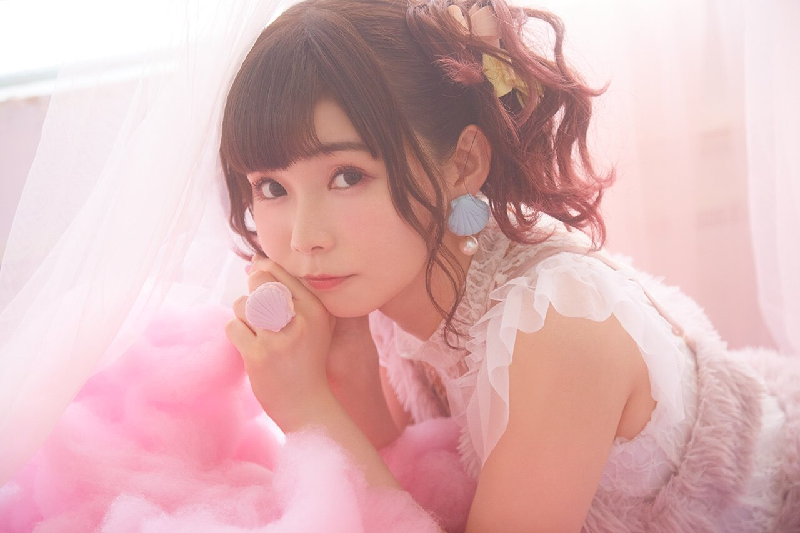
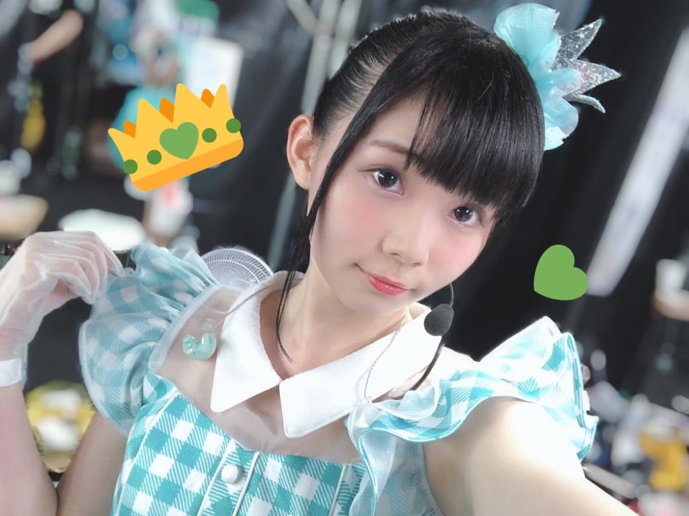
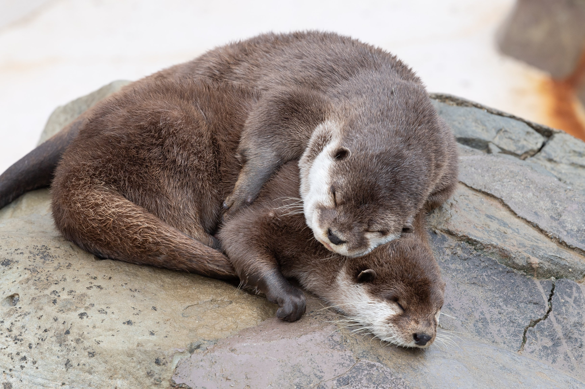
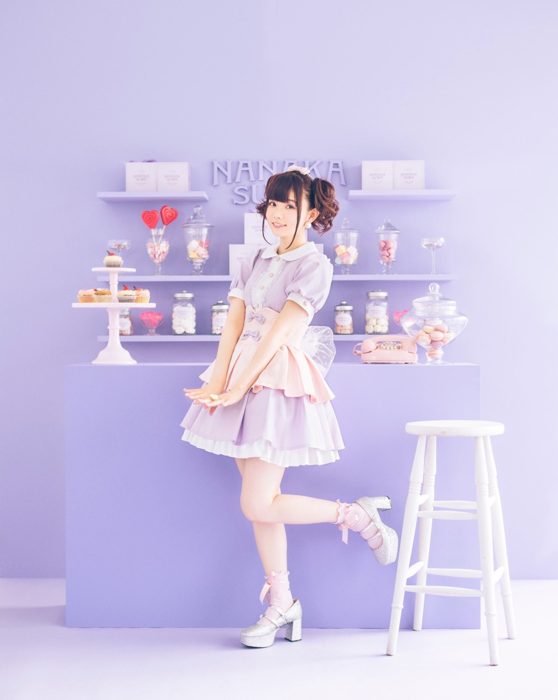
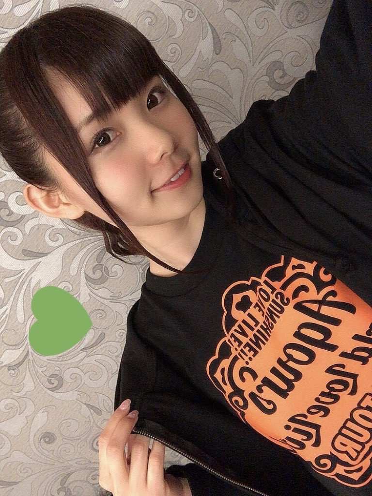
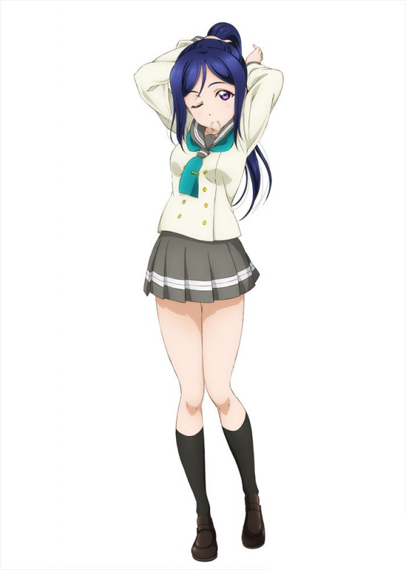
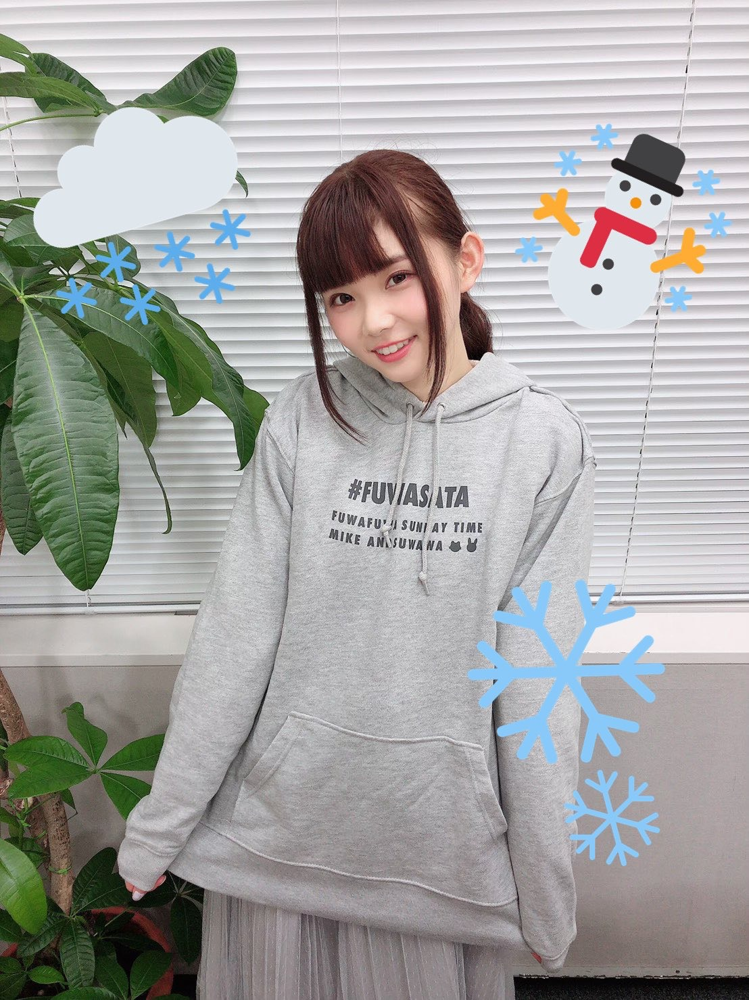
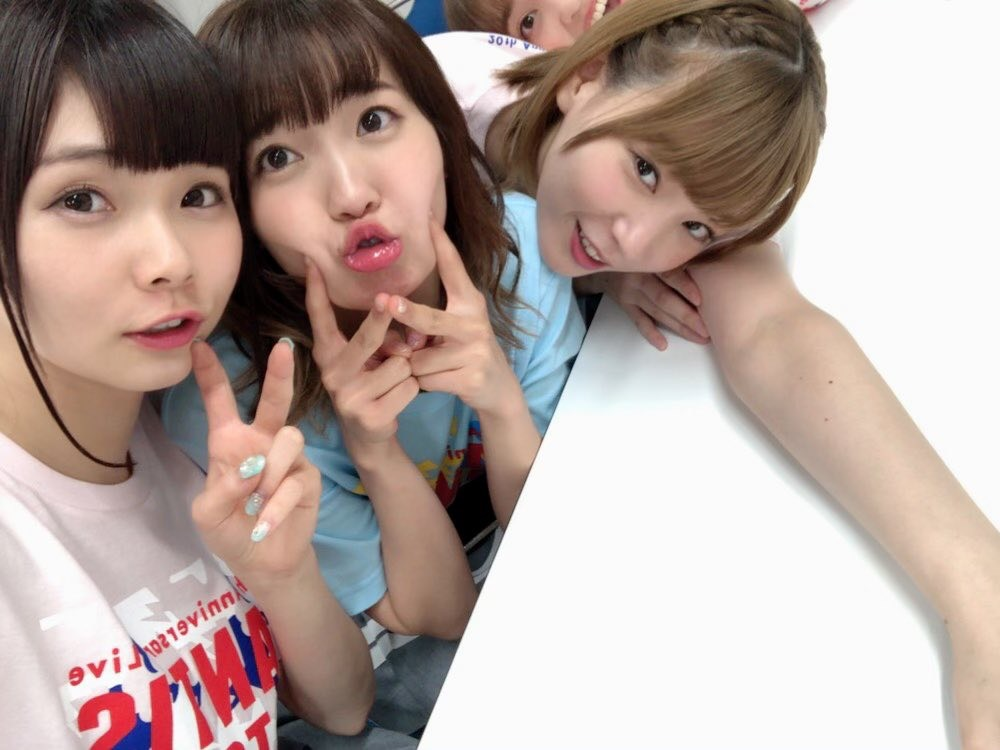

人物介紹

諏訪奈奈香（1994年11月2日－）綽號：すわわ、絲娃娃、sww、諏哥、諏訪水獺獺。日本的女性聲優、歌手。琦玉縣出身，血型A型，經紀公司為アミュレート。

從中學一年級開始觀看深夜動畫，中學二年級開始上聲優養成所。
團體Aqours中唯一的正常人，有「穩如絲娃娃」之稱，但從最近的生放送來看已經完全崩壞了。被杏樹稱讚SIF玩得很好，曾報名參加過SIF全國大賽（雖然在預賽就被刷下來了），在與井澤美香子共同主持的廣播中說過曾經肝SIF肝到凌晨四點。後來更是在某次活動結束當天凌晨四點發推表示正在爆肝SIF。（真正的粉絲）
2015年在LoveLive!系列的新企劃LoveLive!Sunshine!!當中，擔當松浦果南的聲優。

網絡廣播文化超放送《超!A&G+》主持成員之一。

個性 興趣是玩遊戲、看動畫、睡覺（沒有工作會睡上十三四個小時）是個典型的宅女。
特技是舞蹈、鋼琴、書法和浴衣的穿著方式，鋼琴和書法都學了7、8年之久。對於古董收藏、和洋服有興趣（洋服控）。
對於三麗鷗有強烈的喜愛、平時也很常去三麗鷗樂園玩耍。
在第12回的 LoveLive! Sunshine!! Aqours浦RADI!!!上說SIF是她接觸的第一款音游並開啟了她的音游之魂。同時也在節目中提起自己的特點是我行我素，被有紗所肯定並吐槽其為會自己構建一個寂靜的世界，認為沒精神是自己的優點，聲稱要做聲優界第一安靜（然而最近來看話越來越多）。
在LLSS三年級生第一次生放中透露自己學習過大正琴。有英語二級（日本標準）的水平。 喜歡的東西是甜食，不喜歡人多群聚的地方。 非常喜歡動漫「向陽素描」，在自己推特上也寫著自己住在向陽莊101室。 夢想是被自己角色的周邊淹沒。
作品
電視動畫
2016

LoveLive! Sunshine!!（松浦果南）
2017

LoveLive! Sunshine!! 第二季（松浦果南）
2020
怕痛的我，把防禦力點滿就對了（結衣）

音樂專輯
2020年4月15日 1st專輯 So Sweet Dolce